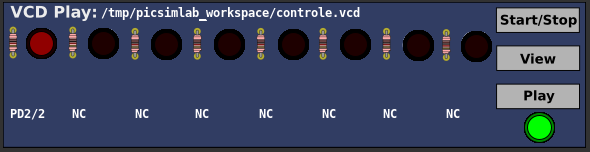

1
Introduction
2
Install
3
Simulator Interface
4
Boards
5
Experimental Boards
6
Serial Communication
7
Debug Support
8
Tools
9
Oscilloscope
10
Spare Parts
10.1
Inputs
10.2
Outputs
10.3
Others
10.4
Virtual
10.4.1
D. Transfer Function
10.4.2
IO Virtual Term
10.4.3
Signal Generator
10.4.4
VCD Dump
10.4.5
VCD Dump (Analogic)
10.4.6
VCD Play
11
Troubleshooting
12
License
A
Use with MPLABX
B
Creating New Boards
[
prev
] [
up
]
10.4.6
VCD Play
This part play a VCD file saved from VCD Dump part.

Examples
[
prev
] [
up
]